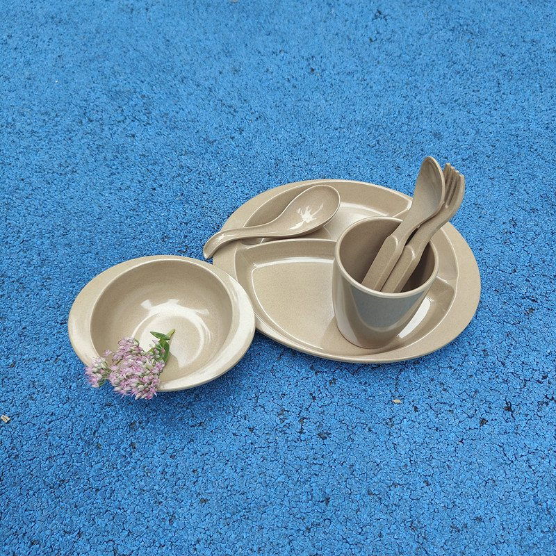

Institutional buying is a different job from restaurant buying. There is a tender document, a nutrition services manager who has to answer to a board, a waste contract that may or may not survive the change, and a delivery window tied to the school calendar rather than to your production schedule. Rice husk trays and cups are already in daily service in school and university dining in the US and the UK, so the material question is largely settled — what remains is the paperwork, the par stock and the calendar. This page handles those three.

Trays do the heavy lifting, and everything else exists to fit on them. That is the spec, and it is worth starting from the tray rather than from the plate.
| SKU | Role in service | What to fix in the specification |
|---|---|---|
| Serving tray | Carries the whole meal through the line and to the table. The piece that gets the most abuse. | Loaded weight, flex when carried one-handed, and whether it stacks flat in your existing rack. |
| Compartment plate | Main plate for set meals; the dividers do the portioning for the line staff. | Compartment count and depth against your menu cycle — five compartments that do not match the menu are worse than three that do. |
| Bowl | Soup, cereal, fruit, side salads. | Whether it clears the tray edge when loaded and whether it nests without wedging. |
| Cup | Milk, water, juice at every sitting. | Handle or handle-free, and rim profile for the lids you use, if any. |
| Kids set | Primary grades and daycare feeding programs. | Piece count per set, portion size, and whether the set has to fit a standard tray footprint. |
If your district is replacing foam or coated-paper trays, start by measuring the rack, not the tray. Rack capacity decides how many pieces you need on site at any moment.
Procurement teams ask for the same set every time. Ours is ready to send, with the actual report, not a summary page.
| Document | Status | Goes in the bid as |
|---|---|---|
| SGS food-contact test report | On file | Material safety evidence, full report with results table. |
| LFGB test report | On file | German/EU food-contact evidence where required. |
| REACH compliance statement | On file | Chemical compliance, SVHC screening on the finished article. |
| MSDS | On file | Composition, handling and storage data. |
| BPA-free / melamine-free declarations | On file | Written declaration plus supporting test data. |
| Formaldehyde migration test | On file | Migration result against the food-contact limit. |
| ISO 14001 | Certified | Environmental management for sustainability scoring. |
| Batch-level third-party test | On request | Arranged at your cost through a lab you nominate; lead time quoted first. |
| Factory inspection | Accepted | Your agency, your checklist; access, records and loading photos provided. |
Tell us the tender's evaluation criteria and we will map the documents to them. If a criterion needs a test we have not run, we say what it would take to run it — before the bid deadline, not after.
An institutional order that arrives three weeks late has missed its window — the dining hall is open and the old trays are still in service. Production is planned backwards from your opening date.

Nutrition services rarely loses an argument on product quality. The argument is lost on unit price compared against disposable trays, so the comparison has to be made honestly.
| Argument | How to present it |
|---|---|
| Cost per use, not cost per piece | Divide landed cost by the number of services before replacement. A reusable tray that lasts several years across hundreds of sittings lands far below the per-piece price of the disposable it replaces — show the division rather than the label. |
| Waste contract impact | Disposable trays are a measurable line in the waste bill. Removing them changes volume, and sometimes the contract tier. Ask your waste provider what the new volume does to the rate. |
| Wash capacity | Be explicit about racks and cycles. If the kitchen cannot wash the volume, the program fails for a reason that has nothing to do with the material. |
| Student and staff acceptance | Run the pilot before the board vote so the answer to "will they use it" is a photograph, not an opinion. |
We will run this comparison with our quoted numbers and show the assumptions, including the case where reusables do not pay back within your wash capacity. That honesty is worth more to a multi-year contract than a favourable chart.
| Question | Answer |
|---|---|
| Can we use it in a school cafeteria? | Yes. Our trays, compartment plates, bowls and cups are in daily service in school and university dining in the US and the UK. No BPA, no melamine, hot pressed at 180°C and above. |
| What goes in a tender response? | The full document set above — SGS, LFGB, REACH, MSDS, BPA-free, melamine-free, formaldehyde migration, TUV/CCT, ISO 14001 — plus inspection and batch testing options. |
| Can we pilot before the tender? | Yes. Stock-color samples ship for your own wash-cycle and student feedback testing. A district color takes two to three weeks. |
| What is the minimum order? | Depends on SKU and whether it is stock color or custom. Logo work starts at 1,000 pieces per design; Pantone matching starts at 500 pieces for boards and 1,000 for cups. We quote against your volume. |
| Is it dishwasher safe? | Yes — hand washing, or a standard dishwasher cycle. Send machine type, temperature and detergent and we confirm the protocol for your SKU. |
Give us the evaluation criteria, the opening date and the volume. We will map the documents and quote against your calendar.